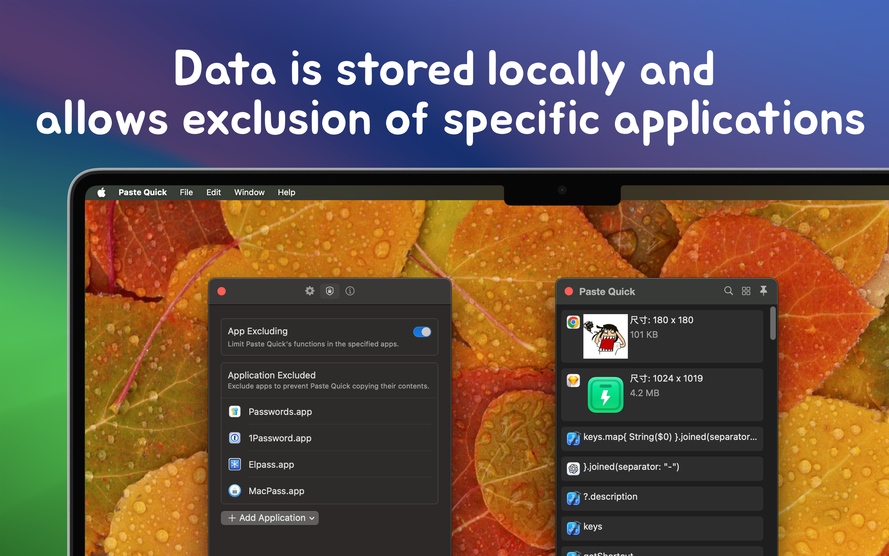

minimum OS requirement: macOS 14.0
PasteQuick is a privacy-focused and simple clipboard management tool designed to help you efficiently manage various temporary data such as text, links, images, and code. It records everything you copy or cut and saves it in a history list, allowing you to quickly find and use clipboard records, greatly improving your productivity.



PasteQuick is continuously being optimized and developed to bring more convenience to your daily work. We welcome your valuable feedback and suggestions!